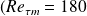
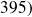
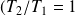
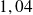
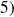

Couplage écoulements pariétaux et transferts thermiques dans les récepteurs solaires à haute température
Etude de l'influence d'un très fort gradient de température sur un écoulement turbulent en canal plan à l'aide de simulations numériques
.
Résumé de la thèse :
L´objectif de cette étude est d´analyser l´écoulement traversant le récepteur solaire haute température de la centrale PEGASE. Cet écoulement est turbulent et soumis à un très fort gradient de température. Nous utilisons la simulation des grandes échelles thermiques appliquée aux équations bas-Mach pour étudier l´écoulement turbulent dans une géométrie de canal plan bi-périodique avec températures imposées aux parois. Pour cette étude, nous avons réalisé des simulations pour deux nombres de Reynolds turbulents différents  et  et pour quatre rapports de température  ;  ; et  . Après avoir validé notre modèle, nous avons réalisé une étude sur la modélisation sous-maille thermique qui conclut sur la nécessité d´utiliser un modèle sous-maille thermique dynamique pour un écoulement ayant une forte intensité turbulente soumis à un très fort gradient de température. Nous analysons l´influence du gradient de température sur les différents profils de vitesse et de température ainsi que sur les spectres d´énergie. Augmenter le gradient de température crée une dissymétrie de tous les profils. Une relaminarisation du côté chaud est visible. On remarque une nouvelle répartition des fluctuations à travers le canal ainsi que de l´énergie en fonction de la taille des échelles. Une création de fluctuations de vitesse et de température a également été mise évidence du côté froid et du côté chaud du canal. Ces effets sont dus, à la fois à une variation de la viscosité cinématique (effet direct de la température) et à une interaction entre les champs turbulents dynamique et thermique.
Mots clefs :
Simulation des Grandes échelles thermiques, écoulements turbulents pariétaux anisothermes, modélisation sous-maille thermique, équations bas-Mach, couplage dynamique thermique.
Télécharger le manuscrit de thèse : |
Pour les personnes intéressées par cette problématique, dans ce même laboratoire la thèse de Frédéric Auléry a continué ces travaux:
Complément : Doctorat en Sciences pour l'Ingénieur
Délivré en 2009 par :
Pr. J.P. Caltagirone, TREFLE, Université Bordeaux 1, Président du jury.
Pr. F. DAUMAS-BATAILLE, PROMES, Université de Perpignan Via Domitia, Directrice de thèse.
Pr. H. Peerhossaini, Lab. Thermocinétique, , Polytech'Nantes, Rapporteur.
Dr. F. Plourde (C.R. HDR), LET, Poitiers.
Dr. A Toutant (Mcf), PROMES, Université de Perpignan Via Domitia, Co-Directeur de thèse.
Dr. Y. Zhou (D.R.), Lawrence Livermore National Laboratory (LLNL), USA.
Abstract:
The aim of this work is to analyse the flow in the high temperature solar receiver of the central tower power plant PEGASE. The flow is turbulent and submitted to a very high temperature gradient.We use the Thermal Large Eddy Simulation applied to the low- Mach number equations in order to work on the turbulent flow in geometry of a biperiodic plane channel with temperature imposed to the wall. For this study, we realize simulations for two different turbulent Reynolds numbers and and for four temperature ratios , , and . After the validation of the model, we realize a study on the thermal subgrid-scale modeling that conclude on the requirement to use a dynamic thermal subgrid-scale model for a flow with a high turbulent intensity and submitted to a very high temperature gradient. We analyse the impact of the temperature gradient on all the velocity and temperature profiles and on the energy spectra. The increase of the temperature gradient creates a dissymmetry of all the profiles. A relaminarisation on the hot side of the domain is visible.We note a new repartition of the fluctuations across the channel and a new repartition of the energy in function of the size of the scales. A creation of velocity and temperature fluctuations is also point up on the hot and the cold side. These effects are due to the cinematic viscosity variation (direct effect of the temperature) and to an interaction between the dynamic and the thermal fields.
Keys words:
Thermal Large Eddy Simulation, non-isothermal wall-bounded turbulent flow, thermal subgrid-scale modelisation, low-Mach equations, dynamic - thermal coupling.